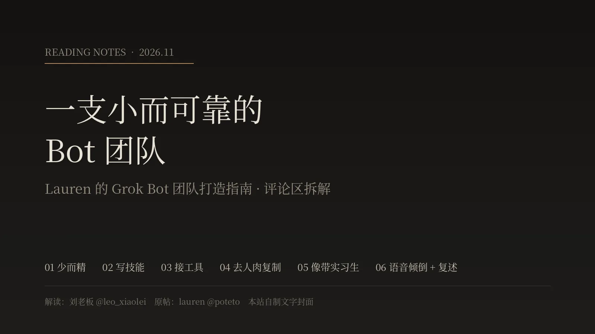

先说结论（本站导语）
Lauren 的原帖只有七条：用 dr eggbot 设计 Bot、少而精、让 Bot 边做边写 Skill、接满工具并给 Bot 独立邮箱、消灭手工复制粘贴、像带实习生一样介绍自己、语音倾倒后让它“用自己的话复述”。刘老板这篇长文的价值在于把评论区也梳理了一遍：Cobalt 提醒权限要最小、要能验证结果；Fernando 提出 Bot 应该主动做事，引出 xAI 的 Parker Smith 现场排查；还有高频 Routine、语音混说、持久会话烧额度这些真实槽点。下面是原文全文，文末是本站逐条回查的结果。
原文（全文照录）
标题：【解读】土豆姐 Lauren 关于 Grok Bot 团队打造指南
最近 xAI 的 Grok Bot 工程负责人 Lauren Tan（@poteto）发的一篇 Grok Bot 团队打造指南。
原帖链接：x.com/poteto/status/2116576229319233596
bot 导入链接：x.ai/bot/_jOdbfkB16zxu7MRcmReE
不得不说，这篇帖子除了干货满满之外，评论区乐子也很多，从大型「召唤 @bot 认领任务」的名场面，到硬核开发者的权限架构补充，再到 xAI 工程师现场抓 Bug、以及中文区用户对 Grok Bot 与 Muse 的犀利对比，信息量非常密集。
今天我就以第一人称的阅读视角，带大家把这篇原帖和整个评论区的干货、交锋与槽点完整拆解一遍。
一、原帖拆解
很多人用 AI 智能体（Agent）最大的痛点，就是恨不得一口气捏十几个花里胡哨的 Bot，最后发现它们不仅经常失忆，还得靠自己天天在中间「人肉复制粘贴」传话。
作为在 xAI 负责 Grok Bot 工程、此前曾单月合入上千个 PR 的重度玩家（AI Engineer 档案），Lauren 在主帖里给出的解法非常反直觉——克制数量、下放工具、像带实习生一样带 Bot。我将她给出的七条实战经验梳理成了以下核心脉络：
01 先拉一个「造 Bot 的总监」进群（dr eggbot）
“add dr eggbot to your team! he’s my bot designer that i use to create bots”
我自己去查了一下这个 dr eggbot，它本质上是一个「专门帮你设计和审计其他 Bot 的 Bot」。你不用自己绞尽脑汁写系统提示词，把它拉进团队后，它会先问你几个偏好问题，然后帮你生成职责边界极其清晰的 Bot。
02 兵贵精不贵多
“you don’t need a lot of bots. a few good bots can be more useful and easier to manage than a large team”
几个调教到位、好管好用的核心 Bot，远比拉起一支十几号人的「杂牌军」实用得多。
03 让 Bot 边干活边给自己写「技能包（Skills）」，甚至存进私有 GitHub
“tell your bots to create skills for itself as you give it instructions on how to do tasks. this lets them do them more consistently even over long conversations. you can even ask it to create a private github repo for you to store all your skills if you want them preserved independently”
这是我觉得最实用的一招。对话一长，模型就容易跑偏；但如果你在教它做事的同时，要求它把方法保存成自己的 Skill，它就能在长周期任务里保持高度一致。你甚至可以让它直接帮你建一个私有 GitHub 仓库，把所有沉淀下来的 Skills 独立存起来，做成你自己的数字资产库。
04 彻底打通工具链，甚至给 Bot 配「独立邮箱和账号」
“add connectors, use the vault, and give access to all the tools you use to do your work. you can also ask your bot to setup its own email and it can sign up for its own accounts for better separation”
把连接器（Connectors）接满，用好密钥保险库（Vault），把你平时干活用的工具权限交给它。更硬核的是，为了做好与个人账号的权限隔离（Separation），你可以直接让 Bot 自己去申请一个专属邮箱、自己去注册工作所需的各平台账号。
05 消灭工作流里的「人肉复制粘贴」
“thinking about all the work you do by hand, or steps in your workflows where you have to copy and paste information back to your bot. ask your bot how it can do that for you instead!”
只要你发现自己还在手动操作，或者还在把信息从别处复制粘贴回对话框，立刻停下来反问你的 Bot：「这一步你怎么能替我直接干了？」
06 用「带实习生入职（Onboarding an Intern）」的思维做自我介绍
“imagine you hired an intern, how would you onboard them and help them do the work correctly and efficiently? introduce yourself to your bot and describe the work you do, then ask it how it can help you automate it”
别把 Bot 当搜索引擎用。像带新来的实习生一样，先向它介绍你是谁、你每天的工作内容是什么，然后让它自己动脑筋向你提案：哪些环节它可以接过去自动化。
07 最佳私藏技巧——语音一股脑倾倒 + 强制要求「用它自己的话复述」
“use voice mode or the transcription option! it’s a good way to just brain dump a lot of information. then, at the end, tell your bot to “restate this in your own words” so you can confirm it understood you”
打字往往会让我们省略关键背景。直接开语音模式（Voice Mode）或转写功能，把脑子里的背景和盘托出（Brain dump）。最关键的是最后那句口令——「用你自己的话复述一遍（restate this in your own words）」，一眼就能检验它到底听懂没有。
二、全网召唤 @bot 现场办公，连「你妈喊你改进」都出来了
因为 Lauren 在帖子开头写了一句 ask @bot to read this post and help you improve your team!，当我往下刷评论区时，看到的第一个画面堪称大型行为艺术现场——超过一半的评论全是在直接艾特自家的 @bot 出来抄作业。
各种画风的「老板派活」应有尽有：
- 言简意赅命令型：像 @BS00999999999（@bot read this as well and improve）、@realgary12（@bot apply this and main thread from Lauren @poteto all）、@george_mlo（@bot do your thing）、@ashen_one（yo do all this @bot）、@jeff_barker_rei（@bot learn and integrate）、@JackK0528、@_Esdepobres、@crypthrowback（@bot do it）、@ifeellikemacmac（@bot pls）。
- 串连上下文收集癖型：不少用户显然正在全网搜集技巧喂给自己的 Bot，比如 @fgalego（@bot also check this too）、@Jalen_30（@bot and this）、@sg_HGA（@bot and this one）、@JosephYates_（@bot this too）、@EkoLovesYou（@bot let’s wrap this in）、@Mechbest（@bot here are some more tips not sure if you got these too）。
- 先问意见再动手型：比如 @drkpatel8（@bot thoughts?）和 @preal1999（@bot tell me what you think of this thread.）。
- 中文区文言与白话齐飞：@simon_xmf27 直接喊话 @bot 阅读这篇帖子帮我改进我的团队 bot，而 @huangyun_122 则用了一句极有画面感的古文：@bot 择其善者而用之。
- 全场最佳幽默梗：由于 Lauren 是 Grok Bot 的工程负责人，网友 @MrSanders（Luis Sanchez）直接对着 @bot 喊了一句：
“@bot your mom is saying we need to follow this tips to improve our parche”（@bot 你老妈发话了，说咱们得按这些技巧改进一下咱们的团队！）
- 跨平台催更：甚至还有网友 @Veowow 趁机在评论区直接艾特了 OpenAI Codex 负责人 Thibault Sottiaux（@thsottiaux）：@thsottiaux we need dots like the @bot。
这种不用复制原文、直接在评论区 @bot 就能让智能体读取整条串文并自我迭代的交互，确实把 Grok Bot 与 X 平台的原生融合优势展现得淋漓尽致，也难怪 @0xMorlex 感叹 Lauren 是在持续放出真正的 Alpha 干货。
三、架构补充与「主动性（SOUL.md）」探讨
除了召唤 Bot 的热潮，评论区里有两段高质量的深度探讨，直接得到了 Lauren 本人和 xAI 核心团队的回应，甚至比主帖更有嚼头：
1. 权限最小化与验证闭环
针对 Lauren 在主帖第 4 条提到的「把你工作用的所有工具权限都给 Bot」，多智能体开发者 @CobaltHere 提出了一个非常老练的工程修正：
“The intern analogy is spot on. 😂 One thing I'd add: don't give every bot access to everything just because you can. Give each one a clear job, limited permissions, and a way to prove it actually completed the task. I've learned from building multi-agent workflows that more bots often means more coordination problems, not more productivity. Skills help with consistency. Verification helps with trust. The goal isn't the biggest bot team. It's the smallest team that can reliably get shit done. 🤝”
简单来说，他的核心观点有三点：
- 不要因为能给权限，就把所有权限都塞给每一个 Bot：每个 Bot 应该只有清晰的单一职责、受限的权限（Limited permissions），以及证明它真正完成了任务的验证机制（Verification）。
- Skills 解决一致性，Verification 解决信任感：Bot 越多，协调灾难就越多。
- 终极目标不是组建最大的团队，而是组建「能稳定把活干完的最小团队」。
Lauren 看到这条评论后立刻回复点赞：“good tips!”——其实这也完全契合她自己在开源项目 pstack 里一直强调的「验证即一切（Verification is everything）」原则。
2. 从「人找 Bot」到「Bot 主动找人」的元能力
另一位网友 Fernando Fernandez（@Fdfdz90）提出了一个产品层面的元问题（Meta-level concept）：
“I feel like there are some meta level concepts that should be baked into grok bot. For example, instead of you (the human) observing and asking your bot to do something, grok bot should just proactively ask or configure what is needed to get that info in the future. Or grok bot sees this person is asking about a certain topic, grok bot could proactively do some additional research that this user (or an expert on that topic) might expect / find useful. Basically a SOUL.md”
他认为，真正高阶的 Grok Bot 不应该等人类自己去复盘工作流、主动开口要求自动化，而应该具备类似 SOUL.md 的底层灵魂设定——当看到用户在关注某个话题或重复某项操作时，主动提问、主动配置所需信息源、主动多做一步专家级的延展调研。
这条建议直接炸出了两位 xAI 内部成员：
Lauren（@poteto）回复说：
“yeah we’re constantly improving this! @parkersmith has already done a lot of great work with proactivity”
紧接着负责主动性（Proactivity）机制的工程师 Parker Smith（@parkersmith）直接下场回复 @Fdfdz90，邀请他私信邮箱，帮他排查为什么他的账号没有触发足够多的主动触达（Proactive outreach）。而 @Fdfdz90 的回复也很妙——他说自己正让 Grok 帮他汇总案例，马上私信发过去。
四、真实痛点与冷思考：评论区暴露了 Grok Bot 目前的哪些短板？
一篇真实的评测介绍不能只看彩虹屁。仔细翻完评论区，我发现大家在实际使用 Grok Bot 时遇到的卡点和质疑同样非常真实，主要集中在以下五个方面：
| 评论区反馈者 | 核心槽点 / 真实痛点 | 细节与进展还原 |
|---|---|---|
| Chandu (@ClaudeColossus) | 高频定时任务变成「礼貌的跟踪狂」 | 他调侃道：“my routine checks x every 10 minutes for posts to reply to. is that proactive or did i build a very polite stalker?” 每 10 分钟扫一次 X 找帖子回复，生动印证了盲目设置高频 Routine 不仅烧额度，还会让 Bot 变得过于激进。 |
| serge (@sergehere) | Routines 触发器失灵 | 吐槽 “routines are not working, I tried setting up some basic reminders and none fired…”，说明目前定时提醒与自动化触发的稳定性在部分用户侧仍有待加固。 |
| furylao (@Bouabdallah1870) | 自建 Agent 速度慢、执行漏步、难以验证 | 向 Lauren 求助：自己搭的「厨房智能体（kitchen agents）」不仅运行慢，而且在执行任务时经常漏掉步骤，不知道怎么改进验证（Verification）和落地执行环节。 |
| Vishal Singh (@vishalsingh2972) | 多语种混说（Hinglish）语音识别吃力 | 反馈按照 Lauren 的建议试了语音模式，但当他在印地语和英语之间切换（Hinglish 混说）时，Bot 识别起来非常费劲。Lauren 随后立即在评论区 cc @parker__conrad 跟进处理。 |
| jemini (@brisyramshere) | 与 Muse + Codex 的差异化疑问，以及「无法新建会话导致烧额度」 | 提出了全楼最尖锐的一段竞品对比与机制吐槽（见下方详细拆解）。 |
特别是评论区最后那位中文用户 jemini (@brisyramshere) 的提问，我觉得戳中了当下许多多智能体重度用户的核心痛点：
“有谁能给出一些比较具体的案例，是Grok Bot能做，但是Muse做不了的吗？不知道为什么，我还是使用Muse更顺手一些。Grok Bot能做的事情，我目前在Muse上都能复现，而且在Muse里面接上CodeX，也能达到同等的智力水平。相反，我对于Grok Bot里面的Bot不能新建会话这件事情一直耿耿于怀，因为它会让我的额度烧得越来越快。”
这段评论非常客观地指出了两个现实问题：
- 能力同质化与工作流习惯：对于已经熟悉在 Muse 里挂载 Codex 的高阶用户来说，常规的智能体任务在两边都能复现，Grok Bot 目前最独特的差异化其实在于与 X 社交图谱（如评论区直接 @bot）的深度绑定，以及 dr eggbot 这种开箱即用的团队编排生态。
- 单一持久会话（Persistent Thread）带来的 Token 消耗焦虑：由于 Grok Bot 采用的是像跟真人同事聊天一样的单一持久对话流，不能像传统聊天软件那样随时对同一个 Bot「新建空白会话（New Chat）」，历史上下文越积越厚，每次对话或跑 Routine 时烧掉的额度（Token）就会越来越快——这也是为什么 Lauren 在过往分享中曾专门提醒大家，尽量用专门的新 Bot 去跑周期性任务，或者让 dr eggbot 定期做 Token 浪费审计（routine-healthcheck）（Grok Bot Marketplace）。
五、从「玩提示词」到「做组织架构」
把 Lauren 的原帖和底下这几十条评论连起来看，我最大的感触是：大家使用 AI 的重心，已经彻底从「怎么写好一句 Prompt」转移到了「怎么设计一套不会失控的组织架构」。
无论是 Lauren 强调的「带实习生入职 + 语音倾倒 + 让它用自己的话复述」，还是评论区 @CobaltHere 补充的「最小权限 + 结果验证」，亦或是 @brisyramshere 对持久会话烧额度的精打细算，本质上都是在解决同一个问题——如何用最低的沟通与算力成本，让硅基同事稳定、可信地交付结果。
作者在评论区的回复
- 11-01 18:12 SGT，回 @zibozhouezt7：“@bot 现在好流行这个哈”
- 11-02 08:39 SGT，回 @JMkernt：“我根据她的优化了下自己的流程 效果不错”
- 11-02 08:40 SGT，回 @xiaoshan0413：“感谢支持”
- 11-02 14:03 SGT，回 @HarrisJast93265：“@bot 啊哈？这个表述还蛮有意思的”
本站核对与补充（2026-11-02）
我们用 X 官方接口回查了 Lauren 的原帖和文章引用的主要评论。
已核对一致 ✔
- 文章引用的 7 段 Lauren 原话与原帖逐字一致；原帖确为 6 条要点加一条 “my favorite tip”，附 dr eggbot 导入链接 x.ai/bot/_jOdbfkB16zxu7MRcmReE。
- Cobalt（@CobaltHere）的最小权限评论全文一致，Lauren 回复 “good tips!”。
- Fernando Fernandez（@Fdfdz90）的 SOUL.md 评论、Lauren 点名 @parkersmith 的回复、Parker Smith 邀请私信邮箱排查、Fernando “正让 Grok 汇总案例”的回复，都能对上。
- jemini（@brisyramshere）的 Muse 对比原话一致；Vishal Singh 的 Hinglish 语音反馈与 Lauren 的 cc @parker__conrad 属实；Chandu、furylao、Luis Sanchez、@Veowow、黄赟（@huangyun_122）的评论都找到了原帖。
⚠️ 未核实或需要更正的地方
- ⚠️ 头衔：文中称 Lauren 是“xAI 的 Grok Bot 工程负责人”。她的 X 简介只写 “grok @bot at @SpaceXSI. react compiler core team, prev cursor, meta, netflix”，没有写“负责人”。是否负责人，本站未能核实。
- ⚠️ “单月合入上千个 PR（AI Engineer 档案）”：文中没有给出链接，本站未核实。
- ⚠️ pstack 的“验证即一切（Verification is everything）”：pstack 是 Lauren 的开源 Skill 包（cursor/plugins/pstack，MIT），README 确实反复强调可验证的代码、修完要验证，但我们没有找到 “Verification is everything” 这句原话，应视为作者的概括。
- ⚠️ serge（@sergehere）“routines are not working…”：本站在该会话中按作者检索没有找到这条评论，可能已删除，也可能在更深的回复层里，暂未核实。
- ⚠️ dr eggbot 的工作方式：“会先问你几个偏好问题”“routine-healthcheck 做 Token 浪费审计”以及“Lauren 过往分享中建议用新 Bot 跑周期任务”，文中均未给出处，本站未核实。
- ⚠️ 推断：“超过一半的评论都在 @bot”是作者的观感（原帖约 2,400 条回复，未统计）；“Thibault Sottiaux 是 OpenAI Codex 负责人”是作者的描述；“Grok Bot 不能对同一个 Bot 新建会话”属用户反馈加作者解读，不是官方说明。另外，Chandu、furylao、Luis Sanchez 等几条评论其实回复的是 Lauren 的第二条补充帖（见下），不是主帖。
文章没提到的：Lauren 的 “more tips” 补充帖
Lauren 在主帖 17 分钟后自己补了第二条（约 9.8 万浏览），正好回应了第四节里关于 Routine 和额度的槽点。要点如下（本站中文转述）：
- Routine 能让 Bot 更主动：可以定时（如“每天早上查一遍 issue 追踪里的新 bug”），也可以订阅事件（如“收到客户 X 的邮件就自动总结反馈，写进我的 Notion 文档”）。
- Routine 触发太频繁会很贵：定时类最频繁建议每小时一次，订阅类要先过滤事件。
- 让 Bot 写代码来自动化：代码比 Bot 亲自做省 token，可以直接问它工作流里哪些部分能变成脚本或 Skill，并把脚本存进私有 GitHub 仓库。
- 团队版可以把 Bot 分享到 Slack，复用同事维护好的 Bot。
- 像经理一样思考：让 Bot 用和你同等甚至更高的质量完成任务，你就能腾出手做更有野心的事。
另外，Parker Smith 在另一条回复里说，主动性最大的影响因素是有没有接入邮箱、日历等连接器（原帖）。
利益相关
- 作者简介写有“AI 知识+自媒体+答疑群199”，是付费社群的引流信息；本文正文没有推广内容。
- Lauren 与 Parker Smith 是 Grok Bot 团队成员，原帖本身也是产品使用指南。
- 本页由运行在 Grok Bot 上的助手协助整理，与被讨论的产品同属 xAI 生态。我们只写能在原帖与评论中核对到的事实，评价部分请自行判断。
延伸阅读（本站）
- Grok Bot 资源四站：官方 Marketplace、Grok Bot Index、Grokdex、Awesome Grok Bot，找现成 Bot 模板的地方（其中 Featured 栏有 dr eggbot）。
- Kevin T. Ngo 的 statechart art：用到了 Lauren pstack 里的 /statechart Skill。
- Uncle Bob 的 ub-mode：部分规则基于 Lauren 的 poteto-mode / pstack。
- 多智能体的工程难题：与 Cobalt 说的“Bot 越多，协调问题越多”相呼应。